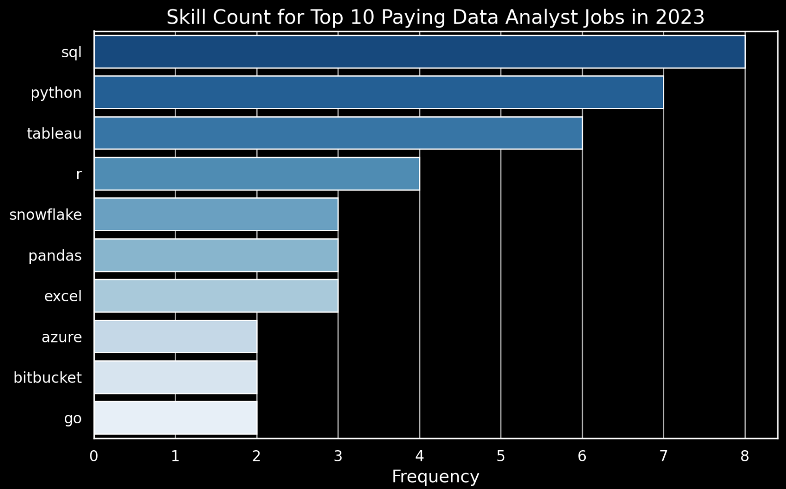

Data Analyst Job Market Analysis

In-depth analysis of the job market using SQL, PostgreSQL, and data visualization tools.

In-depth analysis of the job market using SQL, PostgreSQL, and data visualization tools.

Utilized Power BI to analyze global COVID-19 data trends and present insights.
Developed a project to categorize Turkish news articles using Word2Vec, FastText, and GloVe NLP methods.

A full-stack web development project showcasing HTML, CSS, and JavaScript skills.